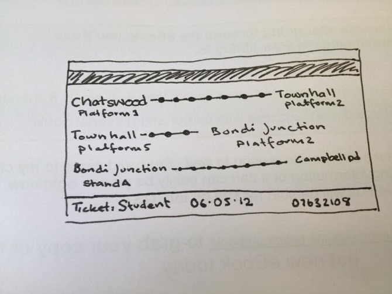
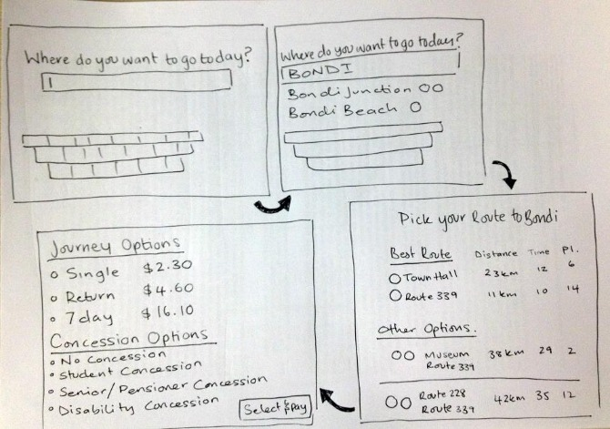
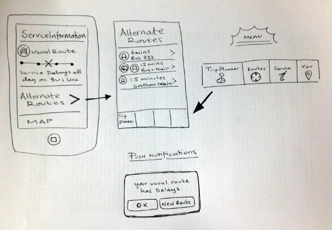
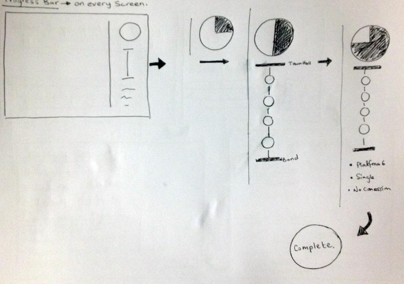

Design Brief
The design Brief that was presented to us by Cubic ultimately required us to rethink the way in which public transport in Sydney Currently works. They wanted us to consider what the user experience is and what it could be. Creating a more unified and intuitive journey for all kinds of users across all different platforms of public transport.
Emphasis was put on:
- Changing consumer expectations
- Accessible Journey Planning
- The introduction of 'Smartcards'
- A consistent experience across all interfaces and transport platforms
All proposed ideas needed to be feasible in at least the next two years.
Design Process
Discovery
The research for this brief was quite intensive, as the problems with Sydney's transport network are wide ranging, we used a number of different research methods to try and ascertain what users found most stressful about the transport network. Through interviews, surveys and ethnographic research focusing specifically on twitter, the feedback was overwhelmingly negative with only 10% of the responses positive. From the research we found that general complaints the same issues mentioned repeatedly: the outdated, difficult and overly complicated interface of all systems; Inefficient and difficult ticketing systems; The breakdown and inaccessibility of the system relating to service disruptions; The difficulties related to the siloed nature of the different public transport systems.
Analysis
From our user research we delved into the ideation process we created user personas based on elements of our user research - separating out users based on needs - we found we could easily categorize users into High Frequency Users, Low Frequency Users and First timers.
User Personas
High Frequency users could be Professionals, Students, Commuters - anyone who uses the public transport system on a daily basis, our research found their biggest problems were the inefficiencies of the ticketing system and difficulties relating to service disruption.
Low Frequency users in contrast are users from sydney but wouldn't generally use the transport system, their biggest problems usually related to wayfinding, they often find have difficulties traversing the network, especially if they had to use more than one system, younger and the more tech savvy users often used alternative routing sites such as www.131500.com.au, however older and less tech savvy users were left to try and work out routes manually.
First timers were the tourists, visiting professionals and other users unfamiliar with the system, they had problems with many parts of the system especially with wayfinding, the ticket machine interfaces and unclear announcements.
Use Case Scenario & Science Fiction Prototyping
We used a number of different brainstorming techniques to ideate solutions to the problems we found for each user persona - the user personas helped us to find solutions as the problems affected each user differently though we were careful not to ignore the broader picture by 'solving' the problems for one type of user we could easily be creating problems for another user. One of the techniques we focused on was science fiction prototyping, a method by which you try to imagine future solutions to problems and then take elements of those future solutions. Through constant ideating and revisioning we went through a number of scenarios and ideas to try and isolate specific elements that we could then use to create a prototype.

{kind=link}
{kind=link}
{kind=link}
Sketches
{kind=link}
{kind=link}
{kind=link}
{kind=link}
High Fidelity Mock Ups
Mobile App
{kind=link}
{kind=link}
{kind=link}
{kind=link}
Ticket Machine Interface
{kind=link}
{kind=link}
{kind=link}
{kind=link}
{kind=link}
{kind=link}
Final Solution
Tags
Our user research, as well as various prototyping, showed that the average high-frequency user would ideally like the “ticket” to be obsolete. Through this idea, we designed “tags” that would replace the traditionally used paper ticket. Tags can be stuck on anything the user wants – keys, wallets, cards, phones, pens, ties, coats, water bottles, bags… anything. A user could have a number of tags to be stuck on different items.
The tag would work simply by logging the user's entries and exits from various modes of transport, calculating their trip's worth and storing this information in the user's account. The user could opt to use either a direct debit system, where the trips would automatically be charged to their credit card, or a credit top-up system, where the user would need to put money into their account at various touchpoints around the public transport system.
Mobile App
Our user research also confirmed that users very much want a mobile app for easy, on-the-go information. The design had to be simple, clean and streamlined so that users could get the information they needed with as few taps as possible. The app, and the user's account, will collect data and know what trips the user takes on a regular basis, and using that information along with GPS data, can inform the user if there are delays or service disruptions. One of the primary functions of the app is to help the user recalculate a new route quickly so that their trip is not too disrupted.
The app also contains route information with timetables and maps, along with a trip planner and real-time service information.
Ticket Machine
A crucial part of our unified transport system is the redesign of the ticket machine interface. Users identified that the current system is hard to use and not very helpful if you don't already know the system quite well. Aiming at non-regular users such as tourists, we decided to take a very personable approach by asking the user "where do you want to go today" The user then types in either an address, a landmark or a station (much like 131500.com) and the ticket machine will present them with a number of travel options (sorted by travel time). The streamlined interface then takes the user through the ticketing options (ticket types and concessions), all the while keeping the user updated with their progress in the purchase.
In terms of the physical interface design of the payment system, we decided to continue with something that is fairly similar to what currently exists as this is what user are accustomed to. While ideally cash will be obsolete in the future, we feel like it couldn't be negated as an option at the moment.
Printed Directions
To go with the new ticket machine interface, we have created the option of printing out a small route guide. While very simply designed, the receipt-sized piece of paper will symbolically show the user exactly what routes to get on, as well as how many stops they need to travel. Rather than using traditional large maps and guides, this would be a small and relatively disposable piece of paper.